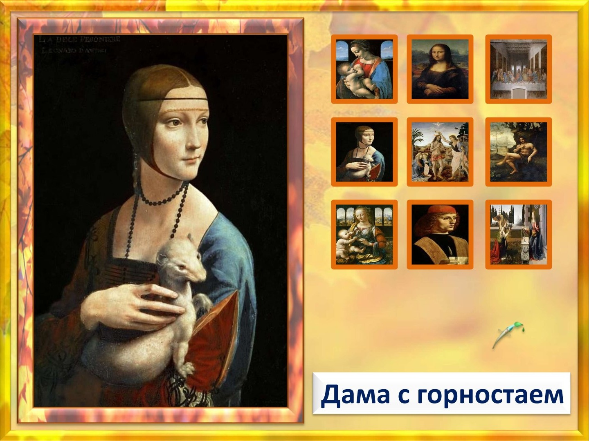
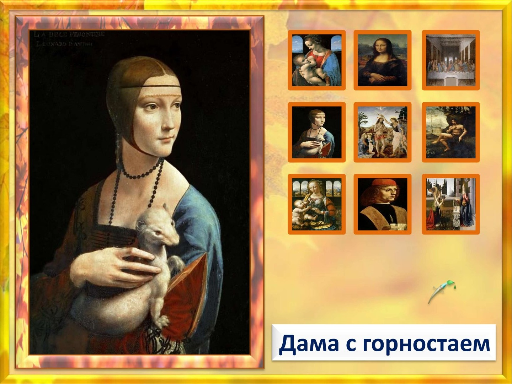
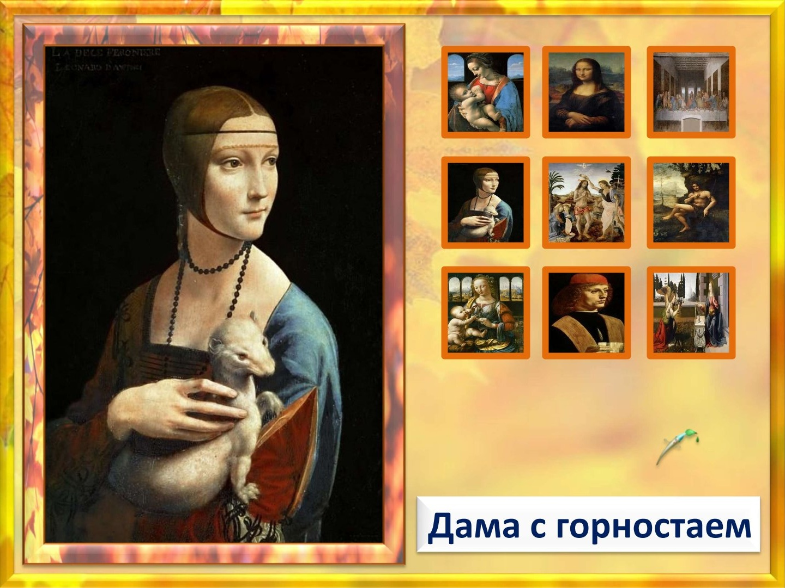
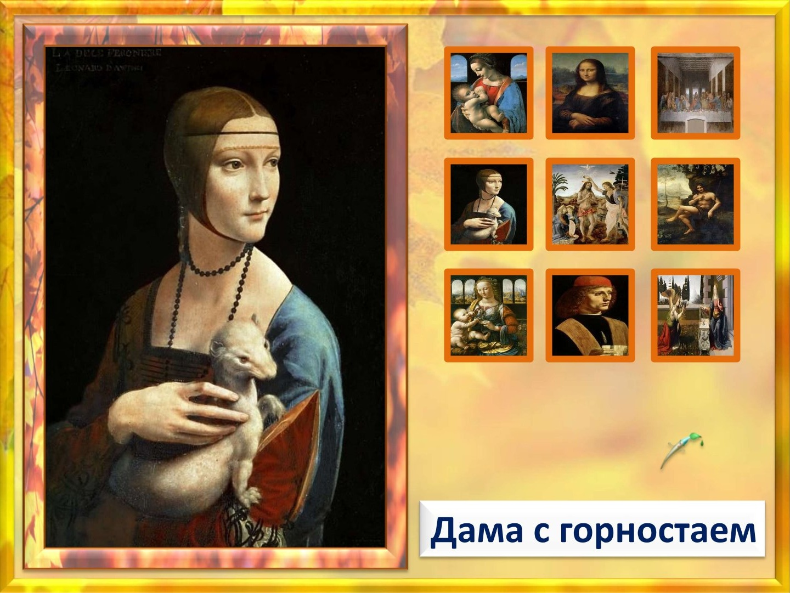

 

Леона́рдо ди сер Пье́ро да Ви́нчи — итальянский художник и учёный, изобретатель, писатель, музыкант
Один из крупнейших представителей искусства Высокого Возрождения
Яркий пример «универсального человека»
Если вас попросят перечислить все известные картины Леонардо да Винчи, вы наверняка начнете с этой. «Мона Лиза» — не только самое известное его произведение, но и самое копируемое и даже самое пародируемое. Этот образ — символ живописи эпохи Возрождения. На картине изображена, скорее всего, Лиза Герардини, супруга флорентийского торговца шелком Франческо дель Джокондо. Леонардо начал работать над ее портретом в 1503 году, и на момент смерти художника портрет все еще находился среди его личных вещей. Хотя историки сходятся в том, что на картине изображена Лиза Герардини, существуют различные версии, почему Леонардо решил взяться за этот заказ: например, по настоянию Джулиано Медичи. Как бы то ни было, художник много лет возил портрет за собой из Италии, Рима во Францию, постоянно его совершенствуя. Всем сегодня известная картина Леонардо да Винчи «Мона Лиза» на самом деле не всегда пользовалась такой популярностью. Современники видели лишь «приятную» улыбку Лизы, и только Теофиль Готье в 1855 году назвал ее загадочной. Именно эта улыбка в глазах публики превратилась в главное достоинство портрета. Хотя на самом деле картина занимает особое место в живописи Возрождения по другим причинам: акцент на лице, погружение изображения в едва заметную тень, использование в качестве грунтовки свинцовых белил, которые отражали лучи света, проходящие через прозрачную лазурь и тонкие слои масляной краски и позволяли усилить ощущение глубины. Новаторские приемы Леонардо играют важную роль в придании статуса портрету.

Перечисляя знаменитые работы Леонардо да Винчи, многие назовут фреску «Тайная вечеря» первой — благодаря Дэну Брауну она действительно приобрела особую популярность, пусть и конспирологического толка. Эта фреска была создана для собора Санта-Мария делле Грацие в Милане. Она украшает стену трапезной. Фреска действительно необычна — Леонардо для своей эпохи был настоящим революционером, он впервые передал эмоции апостолов, когда они слышат слова о предательстве. Каждый апостол реагирует на это по-своему, и об этом нам говорят их позы и выражения лиц. При создании фрески «Тайная вечеря» Леонардо отошел от принятой тогда технологии, используя темперу и масляную глазурь, чтобы лучше передать светотени. Увы, от этого фреска стала быстро портиться, она уже пережила несколько реставраций.
Если рассматривать написанные Леонардо да Винчи портреты, то следом за Джокондой мы наверняка вспомним картину «Дама с горностаем». В галере портретов она занимает видное место потому, что в этой работе мастер впервые отступил от канонов своего времени, требовавших, чтобы высокопостпавленную особу изображали в профиль. Здесь же Чечилия Галлерани, возлюбленная Лодовико Сфорца, изображена в три четверти — она как будто смотрит на что-то, происходящее за пределами картины. Придворный поэт Бернаро Беллинчони так писал о ней: «На полотне — вся слух», «теперь она живая навсегда.»
Лучшие картины да Винчи — портреты. Свой собственный, известный сегодня как «Туринский автопортрет», Леонардо создал, когда ему было около 60 лет. Это не картина, а всего лишь быстрый рисунок, но он передает главное — спокойствие, внутреннюю силу, умение наблюдать. Рисунок был обнаружен в конце XIX века. Споры о его атрибуции продолжаются до сих пор.
Эту картину заказали для монастыря Сан-Донато в Скопето в 1481 году, когда Леонардо было 29 лет. «Поклонение волхвов» должно было стать запрестольным украшением главного алтаря. Планировалась картина большого формата — 246×243 см. Но она так и осталась незаконченной. Некоторые искусствоведы называют ее самой влиятельной незаконченной картиной в истории искусства. И, определенно, она была самой революционной: даже если бы художник ее завершил, заказчик бы все равно ее не принял. Необычным было то, что практически все персонажи показаны в движении, так проявляются их эмоции — один открывает ларец с дарами, другой кланяется, третий указывает на небеса, прохожие оживленно беседуют… Остается неподвижной и спокойной только Дева Мария. Мы не знаем точно, почему Леонардо бросил работу над этим сюжетом. Возможно, ему показалась неразрешимой задача воплотить задуманное в жизнь: композиция картины, судя по его предварительным наброскам, включала 60 фигур.
Одна из ранних работ Леонардо. Возможно, была создана для монастыря Сан-Бартоломео в Монте-Оливето. Несмотря на смелость замысла, в картине множество недостатков — слишком плотные ткани, неестественные складки и драпировки, неувязки в композиции. Из-за этого некоторые специалисты ставили авторство Леонардо под сомнение, а другие считали, что «Благовещение» было написано совместно с Вероккьо. Но скорее всего, это просто работа юного и еще недостаточно опытного Леонардо. Об этом говорят не только приглушенные тона заднего плана, свойственные именно да Винчи, но и другие детали. Анализ показывает, что на нескольких участках масляная краска наносилась пальцами — так любил делать Леонардо. Так что на правой руке Девы Марии, если приглядеться, и сегодня можно увидеть следы, оставленные кончиками пальцев художника.